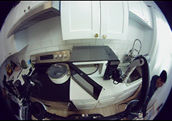
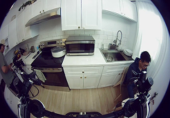
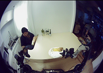
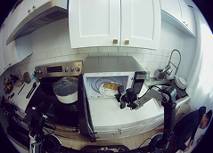

2026 · PHYSICAL INTELLIGENCE · STEERABLE GENERALIST
π0.7
π0.7（2026 年 4 月）的关键词是 diverse context conditioning：过去 VLA 的提示只有“做什么”（语言指令），π0.7 把“怎么做”也写进提示——子目标图像、任务表现的元数据（快慢、质量高低）、策略描述，全部作为多模态条件参与训练。泛化逻辑由此改变：数据五花八门不再是噪声，而是被条件区分开的不同策略。
提示里都有什么
官方博客的示例子目标图（subgoal）与当前观测（current）成对出现——子目标定义“物体该被摆成什么样”的精确空间布局：




三个涌现能力
- 开箱即专家：把 π*0.6 用 RECAP 产出的自主经验带策略元数据并入训练后，同一个 π0.7 在叠衣、咖啡、装盒上达到甚至超过专门 RL 微调的专家模型——不再需要“一个任务一个特化模型”。
- 技能组合：像 LLM 组合概念一样组合技能——使用训练里没见过的厨房电器、完成多阶段任务。
- 零样本跨本体：对训练中欠 represented 的双臂 UR5e 平台，零样本完成衬衫折叠（下方官方视频）。
研究者注记
①π0.7 的深层主张：泛化不靠“更多同质数据”，靠“条件化消化异质数据”——低质量演示标注上“低质量/低速”元数据就能入库，数据护城河被重新定义。②测试时的子目标可以由轻量世界模型合成——世界模型在这里不是路线之争，而是提示生成器。③对比 π*0.6：RECAP 靠 RL 建立可靠性，π0.7 靠条件化把可靠性变成通用能力的一部分；两条线在 π0.7 汇合。④开放问题：子目标图谁来给？测试时世界模型合成的保真度，就是新的能力上界。
参考：Physical Intelligence, π0.7: a Steerable Generalist Robotic Foundation Model with Emergent Capabilities（官方博客，2026-04）